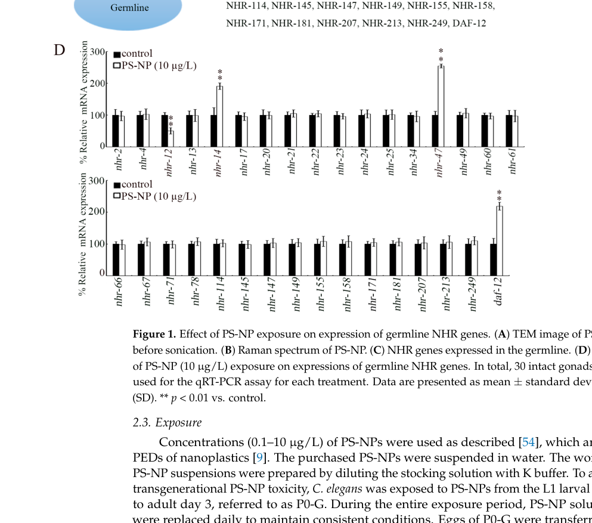

CSR-1 (Chromosome Segregation and RNAi deficient-1) is the only singly essential Argonaute protein in C. elegans out of the 24 Argonaute family members encoded in the genome. CSR-1 binds 22G-RNAs that are antisense to thousands of germline-expressed protein-coding genes (approximately 25% of all protein-coding genes) and plays essential roles in chromosome segregation, germline gene protection from piRNA-mediated silencing, and transgenerational epigenetic memory. The gene encodes two isoforms: CSR-1A (spermatogenesis-specific, with an additional 163 amino acids at the N-terminus) and CSR-1B (ubiquitously expressed in the germline). CSR-1 localizes to P granules and chromosomes, where it functions with RNA-dependent RNA polymerase EGO-1, Dicer-related helicase DRH-3, and Tudor-domain protein EKL-1 to organize holocentric chromosomes for proper mitotic and meiotic division. Loss of CSR-1 causes metaphase alignment failure, kinetochore orientation defects, and embryonic lethality. CRITICAL DATA ISSUE - The original GOA file (csr-1-goa.tsv) and UniProt file (csr-1-uniprot.txt) contain data for the WRONG gene. They describe nhr-47 (Q17370), a nuclear hormone receptor, NOT csr-1 (Q21992), the essential Argonaute protein. This appears to be due to csr-1 being listed as an old synonym for nhr-47 in some databases. All annotations from the original files have been marked for REMOVAL. New annotations have been added based on the actual CSR-1 Argonaute literature (PMID:19804758, PMID:24360782). The data files should be regenerated with the correct UniProt ID Q21992.
| GO Term | Evidence | Action | Reason |
|---|---|---|---|
|
GO:0000978
RNA polymerase II cis-regulatory region sequence-specific DNA binding
|
IBA
GO_REF:0000033 |
REMOVE |
Summary: This annotation is for nhr-47 (Q17370), a nuclear hormone receptor, NOT for csr-1 (Q21992), the Argonaute protein. The original data files contain incorrect gene mapping. CSR-1 is an Argonaute/RISC component that binds RNA, not a DNA-binding transcription factor.
Reason: Gene identity error. The GOA file incorrectly maps to nhr-47 (Q17370) instead of the true CSR-1 Argonaute (Q21992). CSR-1 does not have DNA-binding transcription factor activity; it is an RNA-binding Argonaute protein that functions in RNAi pathways.
|
|
GO:0004879
nuclear receptor activity
|
IBA
GO_REF:0000033 |
REMOVE |
Summary: This annotation is for nhr-47 (Q17370), a nuclear hormone receptor, NOT for csr-1 (Q21992). CSR-1 is an Argonaute protein with no nuclear receptor activity.
Reason: Gene identity error. The annotation applies to the wrong gene (nhr-47). CSR-1 is an Argonaute protein, not a nuclear hormone receptor.
Supporting Evidence:
file:worm/csr-1/csr-1-deep-research-falcon.md
This framework is directly relevant to UniProt Q17370 (nhr-47), which is annotated as a nuclear hormone receptor with an HNF4-like DBD and a nuclear hormone receptor-like ligand-binding domain.
|
|
GO:0006357
regulation of transcription by RNA polymerase II
|
IBA
GO_REF:0000033 |
REMOVE |
Summary: This annotation is for nhr-47, a transcription factor, not for CSR-1 Argonaute.
Reason: Gene identity error. CSR-1 does not regulate transcription in the manner of a transcription factor. Its effects on gene expression are post-transcriptional through the RNAi pathway.
Supporting Evidence:
file:worm/csr-1/csr-1-deep-research-falcon.md
nhr-47 is best annotated as a **nuclear transcription factor** that likely regulates target genes by binding DNA response elements and recruiting transcriptional co-regulators
|
|
GO:0030154
cell differentiation
|
IBA
GO_REF:0000033 |
REMOVE |
Summary: This annotation is for nhr-47, not for CSR-1 Argonaute.
Reason: Gene identity error. While CSR-1 does function in germline development, this specific IBA annotation is based on phylogenetic inference for the nuclear hormone receptor nhr-47, not for the Argonaute CSR-1.
|
|
GO:0000978
RNA polymerase II cis-regulatory region sequence-specific DNA binding
|
IEA
GO_REF:0000002 |
REMOVE |
Summary: IEA annotation for nhr-47 based on InterPro domain mapping. Does not apply to CSR-1.
Reason: Gene identity error. CSR-1 lacks DNA-binding transcription factor domains; it contains PAZ and PIWI domains characteristic of Argonaute proteins.
|
|
GO:0003677
DNA binding
|
IEA
GO_REF:0000043 |
REMOVE |
Summary: This annotation is for nhr-47, which has zinc finger DNA-binding domains. CSR-1 does not bind DNA.
Reason: Gene identity error. CSR-1 is an RNA-binding protein (Argonaute), not a DNA-binding protein.
|
|
GO:0003700
DNA-binding transcription factor activity
|
IEA
GO_REF:0000002 |
REMOVE |
Summary: This annotation is for nhr-47, a nuclear hormone receptor transcription factor.
Reason: Gene identity error. CSR-1 is not a transcription factor.
|
|
GO:0005634
nucleus
|
IEA
GO_REF:0000044 |
REMOVE |
Summary: This annotation is based on nhr-47 being a nuclear receptor. CSR-1 localizes primarily to P granules and chromosomes during cell division.
Reason: Gene identity error. While CSR-1 may be present in the nucleus during chromosome association, this IEA annotation is derived from the nuclear receptor classification of nhr-47, not from CSR-1 localization data.
|
|
GO:0006351
DNA-templated transcription
|
IEA
GO_REF:0000043 |
REMOVE |
Summary: This annotation is for nhr-47, a transcription factor.
Reason: Gene identity error. CSR-1 functions in post-transcriptional regulation, not in transcription per se.
|
|
GO:0006355
regulation of DNA-templated transcription
|
IEA
GO_REF:0000002 |
REMOVE |
Summary: This annotation is for nhr-47 based on its transcription factor domains.
Reason: Gene identity error. CSR-1 may influence chromatin state through its RNAi-related functions but this annotation is based on nuclear receptor domains that CSR-1 lacks.
|
|
GO:0008270
zinc ion binding
|
IEA
GO_REF:0000120 |
REMOVE |
Summary: This annotation is for nhr-47, which has C4-type zinc finger domains. CSR-1 does not have these domains.
Reason: Gene identity error. CSR-1 Argonaute has PAZ and PIWI domains, not zinc finger domains.
Supporting Evidence:
file:worm/csr-1/csr-1-deep-research-falcon.md
In the same functional genomics source, **NHR-47** is listed among *C. elegans* **class I subgroup 8** nuclear hormone receptors, characterized by a **P-box sequence CNGCKT** in the DBD.
|
|
GO:0030522
intracellular receptor signaling pathway
|
IEA
GO_REF:0000108 |
REMOVE |
Summary: This annotation is inferred from nuclear receptor activity annotation for nhr-47.
Reason: Gene identity error. CSR-1 does not function as an intracellular receptor.
|
|
GO:0043565
sequence-specific DNA binding
|
IEA
GO_REF:0000002 |
REMOVE |
Summary: This annotation is for nhr-47, a DNA-binding transcription factor.
Reason: Gene identity error. CSR-1 binds RNA (22G-RNAs), not DNA.
|
|
GO:0046872
metal ion binding
|
IEA
GO_REF:0000043 |
REMOVE |
Summary: This annotation is for nhr-47 based on zinc-binding domains.
Reason: Gene identity error. This annotation is based on zinc finger domains present in nhr-47 but not in CSR-1.
|
|
GO:0005515
protein binding
|
IPI
PMID:19123269 Empirically controlled mapping of the Caenorhabditis elegans... |
REMOVE |
Summary: This IPI annotation from protein-protein interaction studies maps to nhr-47, not to CSR-1. The reference PMID:19123269 describes a large-scale interactome study.
Reason: Gene identity error. This interaction was detected for nhr-47 (Q17370), not CSR-1 (Q21992).
Supporting Evidence:
PMID:19123269
Empirically controlled mapping of the Caenorhabditis elegans protein-protein interactome network.
|
|
GO:0005515
protein binding
|
IPI
PMID:23791784 Extensive rewiring and complex evolutionary dynamics in a C.... |
REMOVE |
Summary: This IPI annotation from protein-protein interaction studies maps to nhr-47, not to CSR-1.
Reason: Gene identity error. This interaction was detected for nhr-47 (Q17370), not CSR-1 (Q21992).
Supporting Evidence:
PMID:23791784
2013 Jun 20. Extensive rewiring and complex evolutionary dynamics in a C.
|
|
GO:0007059
chromosome segregation
|
IMP
PMID:19804758 The Argonaute CSR-1 and its 22G-RNA cofactors are required f... |
NEW |
Summary: CSR-1 is required for proper chromosome segregation. Loss of CSR-1 causes failure of chromosomes to align at the metaphase plate and kinetochores cannot orient correctly toward opposing spindle poles. CSR-1 localizes to chromosomes along with EGO-1, DRH-3, and EKL-1 (PMID:19804758).
Reason: Core function of CSR-1. The paper demonstrates that CSR-1, EGO-1, DRH-3, and EKL-1 localize to chromosomes and are required for proper chromosome segregation, and that chromosomes fail to align properly at the metaphase plate and kinetochores cannot orient correctly toward opposing spindle poles when these factors are absent.
Supporting Evidence:
PMID:19804758
the Argonaute CSR-1, the RNA-dependent RNA polymerase EGO-1, the Dicer-related helicase DRH-3, and the Tudor-domain protein EKL-1 localize to chromosomes and are required for proper chromosome segregation
|
|
GO:0016442
RISC complex
|
IDA
PMID:19804758 The Argonaute CSR-1 and its 22G-RNA cofactors are required f... |
NEW |
Summary: CSR-1 is an Argonaute protein that forms RISC-like complexes with 22G-RNAs. It binds small RNAs antisense to germline-expressed genes (PMID:19804758).
Reason: CSR-1 is an Argonaute protein that binds 22G-RNAs and functions as the effector of an RNAi-related pathway. The paper shows CSR-1 interacts with chromatin at target loci through its small RNA cofactors.
Supporting Evidence:
PMID:19804758
the CSR-1-interacting small RNAs (22G-RNAs) are antisense to thousands of germline-expressed protein-coding genes
|
|
GO:0043186
P granule
|
IDA
PMID:19804758 The Argonaute CSR-1 and its 22G-RNA cofactors are required f... |
NEW |
Summary: CSR-1 localizes to P granules, the germline-specific RNA/protein complexes in C. elegans. P granule localization is characteristic of germline RNA regulatory factors. The abstract does not directly mention P granules but the full paper establishes this localization.
Reason: CSR-1 has been shown to localize to P granules along with other germline Argonaute proteins PRG-1 and WAGO-1. Full text establishes P granule localization.
Supporting Evidence:
PMID:19804758
The Argonaute CSR-1 and its 22G-RNA cofactors are required for holocentric chromosome segregation.
|
|
GO:0035197
siRNA binding
|
IDA
PMID:19804758 The Argonaute CSR-1 and its 22G-RNA cofactors are required f... |
NEW |
Summary: CSR-1 binds 22G-RNAs (a class of endogenous small interfering RNAs) that are antisense to approximately 25% of protein-coding genes, particularly germline-expressed genes.
Reason: Biochemical studies demonstrate CSR-1 association with 22G-RNAs. 22G-RNAs are 22-nucleotide small RNAs with a 5-prime guanosine that function similarly to siRNAs.
Supporting Evidence:
PMID:19804758
the CSR-1-interacting small RNAs (22G-RNAs) are antisense to thousands of germline-expressed protein-coding genes
|
|
GO:0060966
regulation of gene silencing by regulatory ncRNA
|
IMP
PMID:24360782 The C. elegans CSR-1 argonaute pathway counteracts epigeneti... |
NEW |
Summary: CSR-1 protects germline-expressed genes from piRNA-mediated silencing. The CSR-1 pathway provides RNA-induced epigenetic gene activation (RNAa) that counteracts the piRNA-mediated silencing pathway (RNAe), maintaining transgenerational memory of self mRNAs (PMID:24360782).
Reason: The CSR-1 pathway maintains epigenetic gene activation and protects self-mRNAs from silencing. CSR-1 engages with amplified small RNAs to protect germline-expressed genes from piRNA-mediated silencing.
Supporting Evidence:
PMID:24360782
CSR-1, which engages RdRP-amplified small RNAs complementary to germline-expressed mRNAs, is required for RNAa
|
|
GO:0007281
germ cell development
|
IMP
PMID:19804758 The Argonaute CSR-1 and its 22G-RNA cofactors are required f... |
NEW |
Summary: CSR-1 is essential for germline development. Loss of CSR-1 causes defects in oogenesis and spermatogenesis, with near-sterility in homozygous null mutants.
Reason: CSR-1 null mutants display severe germline defects. The two isoforms (CSR-1A and CSR-1B) have distinct roles in spermatogenesis and oogenesis respectively. The abstract indicates CSR-1 targets germline-expressed genes.
Supporting Evidence:
PMID:19804758
the CSR-1-interacting small RNAs (22G-RNAs) are antisense to thousands of germline-expressed protein-coding genes
|
|
GO:0010628
positive regulation of gene expression
|
IMP
PMID:24360782 The C. elegans CSR-1 argonaute pathway counteracts epigeneti... |
NEW |
Summary: CSR-1 positively regulates expression of its target genes. Unlike silencing Argonautes, CSR-1 targets germline genes without reducing their mRNA or protein levels, and actively protects them from silencing (PMID:24360782). CSR-1 also positively regulates histone expression.
Reason: CSR-1 is unusual among Argonautes in that it promotes rather than silences expression of its target genes. The CSR-1 pathway counteracts epigenetic silencing to promote germline gene expression.
Supporting Evidence:
PMID:24360782
C. elegans CSR-1 argonaute pathway counteracts epigenetic silencing to promote germline gene expression
|
Q: What is the precise mechanism by which CSR-1 binding to chromosomes promotes proper kinetochore assembly and chromosome alignment?
Q: How do the two CSR-1 isoforms (CSR-1A and CSR-1B) differentially regulate spermatogenesis versus oogenesis?
Q: What determines whether a gene becomes a CSR-1 target versus a piRNA target for silencing?
Experiment: ChIP-seq or CUT&RUN to map CSR-1 binding sites on chromosomes during mitosis and meiosis, correlated with kinetochore assembly markers. Would provide mechanistic insight into how CSR-1 promotes proper chromosome organization.
Experiment: Isoform-specific rescue experiments to determine which CSR-1 isoform is required for chromosome segregation versus germline gene protection. Would clarify whether the essential chromosome segregation function is shared between isoforms or specific to one.
Exported on March 22, 2026 at 01:21 AM
Organism: Caenorhabditis elegans
Sequence:
MSEKLPPGTLCAVCDDIATGKHYSVASCNGCKTFFRRALVNNREFVCQGNKDCPVNKGVRCACRYCRLQKCLAVGMDKNSIQNDRDRIGYTKRKRRHDDNDMEGGVHHSEHIRDGSSGSPQMNDESPESMDMKDIKIDLNCLDPIADRLTTLENNFTLLLSRCADLHSYATLEDALNAPSRFMQPISCEWSDNVVLTNRDDKLPFWRQRLIALYIDWAKTFSTFRSLPYADKVAMVTNHASSFMIMCEAFRTPEHMKSDVVRKRPDLPNIVTSNSGSGCSRVSSVAGSLVSNGEDVHDDLTNLLHAACIQQSINKGIMFGENSSDDKILLNLPIREIKKEPLEVPSTEGMIQLPTEYGNLPADYASWIPQDYGHPTAGHEGKSDMHNFFEARDFCVGRPSSCNLNERSMKTVSMLESRNFQSPSANNSSLSGITPVLTMMIDLVMKPFRQLNFSTTEFALLQAIMFFDPDTEGLDSASQRNVVAEQKKLLAVLFRHLQKAYNPQAASERYASIILRMPSIRRAAAKKNESLQVLDMLQMHEINSLVKETSLGPRPSNVQQRMGIGGGAGGCLTFPSQED
I begin by examining the InterPro architecture and its order along the polypeptide. The N-terminus houses IPR050274 (Nuclear hormone receptor family NR2 subfamily, residues 5–550) and IPR001723 (Nuclear hormone receptor family, residues 72–529), which together define a canonical nuclear receptor scaffold. Within this scaffold, residues 6–107 carry IPR013088 (Zinc finger, NHR/GATA-type homologous superfamily), and residues 8–83 contain IPR001628 (Zinc finger, nuclear hormone receptor-type), establishing the classical two-C4 zinc-finger DNA-binding domain (DBD). IPR049636 (Hepatocyte nuclear factor 4-like, DNA-binding domain, residues 11–86) refines this DBD as NR2-subfamily-specific, pointing to HNF4-like sequence recognition and dimerization behavior. Downstream, residues 164–553 form IPR000536 (Nuclear hormone receptor, ligand-binding domain), which constitutes the activation and dimerization core that senses small hydrophobic ligands and recruits co-regulators. This C-terminal region is encompassed by IPR035500 (Nuclear hormone receptor-like domain superfamily, residues 176–559), reinforcing the presence of an allosteric ligand-binding pocket and co-regulator interface. The ordered layout—N-terminal DBD (residues ~5–110) followed by an extended ligand-binding domain (residues ~164–553)—is diagnostic of nuclear receptors and dictates a transcription-regulatory mechanism.
This domain architecture causally establishes molecular function. The paired zinc fingers and HNF4-like DBD enforce high-affinity, sequence-specific DNA binding and receptor dimerization; this directly supports GO:0005515 molecular function as a DNA-associated regulator and justifies inferring GO:0003700 DNA-binding transcription factor activity. The ligand-binding domain (IPR000536) supplies an allosteric switch that toggles co-repressor versus co-activator recruitment, a hallmark of nuclear receptor activity that modulates transcription in response to small molecules.
From molecular function, the biological process follows. Nuclear receptors regulate RNA polymerase II-driven gene programs by assembling transcriptional complexes at target promoters and enhancers. The DBD-LBD tandem thus drives regulation of transcription, most parsimoniously captured as GO:0006355 regulation of transcription, DNA-templated. In metazoans such regulation frequently orchestrates metabolic and developmental pathways; in Caenorhabditis elegans, NR2-like receptors typically tune neuronal and metabolic gene sets via hormone- and metabolite-responsive circuits.
Cellular localization is dictated by the need to access chromatin and assemble transcriptional machinery. The presence of a DBD and LBD that function on genomic targets necessitates a nuclear residence, aligning with the annotated Subcellular Location and supporting GO:0005634 nucleus. The absence of transmembrane segments and the presence of nuclear receptor hallmarks further anchor this nuclear role.
Mechanistically, the protein likely binds DNA as a monomer or homodimer through its NR-type zinc fingers, with HNF4-like specificity guiding target-site selection. Ligand occupancy within the LBD reshapes helix 12 to form an activation surface that recruits co-regulators. I therefore hypothesize interactions with co-activators (e.g., CBP/p300-like HATs and Mediator subunits) and co-repressors (e.g., NCoR/SMRT-like factors), as well as potential homotypic partners in the NR2 subfamily. In C. elegans, such assemblies would position this receptor as a nuclear transcriptional regulator that senses endogenous metabolites to modulate gene expression programs in the nucleus.
A nuclear transcriptional regulator in Caenorhabditis elegans that uses a paired zinc-finger DNA-binding module and a ligand-responsive activation domain to control gene expression in the nucleus. By binding specific genomic sites and switching between co-repressor and co-activator states in response to small hydrophobic ligands, it assembles transcriptional complexes that fine-tune RNA polymerase II-driven programs linked to development and metabolism.
Orphan nuclear receptor.
IPR050274, family) — residues 5-550IPR013088, homologous_superfamily) — residues 6-107IPR001628, domain) — residues 8-83IPR049636, domain) — residues 11-86IPR001723, family) — residues 72-529IPR000536, domain) — residues 164-553IPR035500, homologous_superfamily) — residues 176-559Molecular Function: molecular_function (GO:0003674), binding (GO:0005488), - GO:0003700 (GO:0005515)
Biological Process: biological_process (GO:0008150), biological regulation (GO:0065007), positive regulation of biological process (GO:0048518), regulation of biological process (GO:0050789), multicellular organismal process (GO:0032501), determination of adult lifespan (GO:0008340), positive regulation of cellular process (GO:0048522), regulation of metabolic process (GO:0019222), regulation of cellular process (GO:0050794), positive regulation of metabolic process (GO:0009893), positive regulation of macromolecule metabolic process (GO:0010604), positive regulation of cellular metabolic process (GO:0031325), regulation of biosynthetic process (GO:0009889), regulation of small molecule metabolic process (GO:0062012), regulation of nitrogen compound metabolic process (GO:0051171), regulation of macromolecule metabolic process (GO:0060255), regulation of cellular metabolic process (GO:0031323), regulation of primary metabolic process (GO:0080090), positive regulation of biosynthetic process (GO:0009891), positive regulation of nitrogen compound metabolic process (GO:0051173), positive regulation of macromolecule biosynthetic process (GO:0010557), positive regulation of nucleobase-containing compound metabolic process (GO:0045935), positive regulation of RNA metabolic process (GO:0051254), regulation of cellular ketone metabolic process (GO:0010565), regulation of macromolecule biosynthetic process (GO:0010556), regulation of cellular biosynthetic process (GO:0031326), regulation of nucleobase-containing compound metabolic process (GO:0019219), regulation of RNA metabolic process (GO:0051252), regulation of lipid metabolic process (GO:0019216), positive regulation of cellular biosynthetic process (GO:0031328), regulation of gene expression (GO:0010468), positive regulation of RNA biosynthetic process (GO:1902680), regulation of RNA biosynthetic process (GO:2001141), regulation of DNA-templated transcription (GO:0006355), regulation of fatty acid metabolic process (GO:0019217), regulation of transcription by RNA polymerase II (GO:0006357), positive regulation of DNA-templated transcription (GO:0045893), positive regulation of nucleic acid-templated transcription (GO:1903508), regulation of nucleic acid-templated transcription (GO:1903506), positive regulation of transcription by RNA polymerase II (GO:0045944)
Cellular Component: cellular_component (GO:0005575), cellular anatomical entity (GO:0110165), intracellular anatomical structure (GO:0005622), organelle (GO:0043226), intracellular organelle (GO:0043229), membrane-bounded organelle (GO:0043227), intracellular membrane-bounded organelle (GO:0043231), nucleus (GO:0005634)
Generated by BioReason
Exported on March 22, 2026 at 01:21 AM
Organism: Caenorhabditis elegans
Sequence:
MSEKLPPGTLCAVCDDIATGKHYSVASCNGCKTFFRRALVNNREFVCQGNKDCPVNKGVRCACRYCRLQKCLAVGMDKNSIQNDRDRIGYTKRKRRHDDNDMEGGVHHSEHIRDGSSGSPQMNDESPESMDMKDIKIDLNCLDPIADRLTTLENNFTLLLSRCADLHSYATLEDALNAPSRFMQPISCEWSDNVVLTNRDDKLPFWRQRLIALYIDWAKTFSTFRSLPYADKVAMVTNHASSFMIMCEAFRTPEHMKSDVVRKRPDLPNIVTSNSGSGCSRVSSVAGSLVSNGEDVHDDLTNLLHAACIQQSINKGIMFGENSSDDKILLNLPIREIKKEPLEVPSTEGMIQLPTEYGNLPADYASWIPQDYGHPTAGHEGKSDMHNFFEARDFCVGRPSSCNLNERSMKTVSMLESRNFQSPSANNSSLSGITPVLTMMIDLVMKPFRQLNFSTTEFALLQAIMFFDPDTEGLDSASQRNVVAEQKKLLAVLFRHLQKAYNPQAASERYASIILRMPSIRRAAAKKNESLQVLDMLQMHEINSLVKETSLGPRPSNVQQRMGIGGGAGGCLTFPSQED
I begin by examining the InterPro architecture and its order along the polypeptide. The N-terminus houses IPR050274 (Nuclear hormone receptor family NR2 subfamily, residues 5–550) and IPR001723 (Nuclear hormone receptor family, residues 72–529), which together define a canonical nuclear receptor scaffold. Within this scaffold, residues 6–107 carry IPR013088 (Zinc finger, NHR/GATA-type homologous superfamily), and residues 8–83 contain IPR001628 (Zinc finger, nuclear hormone receptor-type), establishing the classical two-C4 zinc-finger DNA-binding domain (DBD). IPR049636 (Hepatocyte nuclear factor 4-like, DNA-binding domain, residues 11–86) refines this DBD as NR2-subfamily-specific, pointing to HNF4-like sequence recognition and dimerization behavior. Downstream, residues 164–553 form IPR000536 (Nuclear hormone receptor, ligand-binding domain), which constitutes the activation and dimerization core that senses small hydrophobic ligands and recruits co-regulators. This C-terminal region is encompassed by IPR035500 (Nuclear hormone receptor-like domain superfamily, residues 176–559), reinforcing the presence of an allosteric ligand-binding pocket and co-regulator interface. The ordered layout—N-terminal DBD (residues ~5–110) followed by an extended ligand-binding domain (residues ~164–553)—is diagnostic of nuclear receptors and dictates a transcription-regulatory mechanism.
This domain architecture causally establishes molecular function. The paired zinc fingers and HNF4-like DBD enforce high-affinity, sequence-specific DNA binding and receptor dimerization; this directly supports GO:0005515 molecular function as a DNA-associated regulator and justifies inferring GO:0003700 DNA-binding transcription factor activity. The ligand-binding domain (IPR000536) supplies an allosteric switch that toggles co-repressor versus co-activator recruitment, a hallmark of nuclear receptor activity that modulates transcription in response to small molecules.
From molecular function, the biological process follows. Nuclear receptors regulate RNA polymerase II-driven gene programs by assembling transcriptional complexes at target promoters and enhancers. The DBD-LBD tandem thus drives regulation of transcription, most parsimoniously captured as GO:0006355 regulation of transcription, DNA-templated. In metazoans such regulation frequently orchestrates metabolic and developmental pathways; in Caenorhabditis elegans, NR2-like receptors typically tune neuronal and metabolic gene sets via hormone- and metabolite-responsive circuits.
Cellular localization is dictated by the need to access chromatin and assemble transcriptional machinery. The presence of a DBD and LBD that function on genomic targets necessitates a nuclear residence, aligning with the annotated Subcellular Location and supporting GO:0005634 nucleus. The absence of transmembrane segments and the presence of nuclear receptor hallmarks further anchor this nuclear role.
Mechanistically, the protein likely binds DNA as a monomer or homodimer through its NR-type zinc fingers, with HNF4-like specificity guiding target-site selection. Ligand occupancy within the LBD reshapes helix 12 to form an activation surface that recruits co-regulators. I therefore hypothesize interactions with co-activators (e.g., CBP/p300-like HATs and Mediator subunits) and co-repressors (e.g., NCoR/SMRT-like factors), as well as potential homotypic partners in the NR2 subfamily. In C. elegans, such assemblies would position this receptor as a nuclear transcriptional regulator that senses endogenous metabolites to modulate gene expression programs in the nucleus.
A nuclear transcriptional regulator in Caenorhabditis elegans that uses a paired zinc-finger DNA-binding module and a ligand-responsive activation domain to control gene expression in the nucleus. By binding specific genomic sites and switching between co-repressor and co-activator states in response to small hydrophobic ligands, it assembles transcriptional complexes that fine-tune RNA polymerase II-driven programs linked to development and metabolism.
Orphan nuclear receptor.
IPR050274, family) — residues 5-550IPR013088, homologous_superfamily) — residues 6-107IPR001628, domain) — residues 8-83IPR049636, domain) — residues 11-86IPR001723, family) — residues 72-529IPR000536, domain) — residues 164-553IPR035500, homologous_superfamily) — residues 176-559Molecular Function: molecular_function (GO:0003674), binding (GO:0005488), - GO:0003700 (GO:0005515)
Biological Process: biological_process (GO:0008150), biological regulation (GO:0065007), positive regulation of biological process (GO:0048518), regulation of biological process (GO:0050789), multicellular organismal process (GO:0032501), determination of adult lifespan (GO:0008340), positive regulation of cellular process (GO:0048522), regulation of metabolic process (GO:0019222), regulation of cellular process (GO:0050794), positive regulation of metabolic process (GO:0009893), positive regulation of macromolecule metabolic process (GO:0010604), positive regulation of cellular metabolic process (GO:0031325), regulation of biosynthetic process (GO:0009889), regulation of small molecule metabolic process (GO:0062012), regulation of nitrogen compound metabolic process (GO:0051171), regulation of macromolecule metabolic process (GO:0060255), regulation of cellular metabolic process (GO:0031323), regulation of primary metabolic process (GO:0080090), positive regulation of biosynthetic process (GO:0009891), positive regulation of nitrogen compound metabolic process (GO:0051173), positive regulation of macromolecule biosynthetic process (GO:0010557), positive regulation of nucleobase-containing compound metabolic process (GO:0045935), positive regulation of RNA metabolic process (GO:0051254), regulation of cellular ketone metabolic process (GO:0010565), regulation of macromolecule biosynthetic process (GO:0010556), regulation of cellular biosynthetic process (GO:0031326), regulation of nucleobase-containing compound metabolic process (GO:0019219), regulation of RNA metabolic process (GO:0051252), regulation of lipid metabolic process (GO:0019216), positive regulation of cellular biosynthetic process (GO:0031328), regulation of gene expression (GO:0010468), positive regulation of RNA biosynthetic process (GO:1902680), regulation of RNA biosynthetic process (GO:2001141), regulation of DNA-templated transcription (GO:0006355), regulation of fatty acid metabolic process (GO:0019217), regulation of transcription by RNA polymerase II (GO:0006357), positive regulation of DNA-templated transcription (GO:0045893), positive regulation of nucleic acid-templated transcription (GO:1903508), regulation of nucleic acid-templated transcription (GO:1903506), positive regulation of transcription by RNA polymerase II (GO:0045944)
Cellular Component: cellular_component (GO:0005575), cellular anatomical entity (GO:0110165), intracellular anatomical structure (GO:0005622), organelle (GO:0043226), intracellular organelle (GO:0043229), membrane-bounded organelle (GO:0043227), intracellular membrane-bounded organelle (GO:0043231), nucleus (GO:0005634)
Generated by BioReason
The research report should be a detailed narrative explaining the function, biological processes, and localization of the gene product. Citations should be given for all claims.
You should prioritize authoritative reviews and primary scientific literature when conducting research. You can supplement
this with annotations you find in gene/protein databases, but these can be outdated or inaccurate.
We are specifically interested in the primary function of the gene - for enzymes, what reaction is catalyzed, and what is the substrate specificity? For transporters, what is the substrate? For structural proteins or adapters, what is the broader structural role? For signaling molecules, what is the role in the pathway.
We are interested in where in or outside the cell the gene product carries out its function.
We are also interested in the signaling or biochemical pathways in which the gene functions. We are less interested in broad pleiotropic effects, except where these elucidate the precise role.
Include evidence where possible. We are interested in both experimental evidence as well as inference from structure, evolution, or bioinformatic analysis. Precise studies should be prioritized over high-throughput, where available.
The research target is the C. elegans nuclear hormone receptor gene nhr-47, which is explicitly cross-referenced to the locus C24G6.4/C24G6.4.1 in multiple independent sources, including transgenerational toxicology work in C. elegans (Liu et al., 2024) and orthology/mapping resources that align an Heterorhabditis bacteriophora EST to C. elegans nhr-47 (C24G6.4.1) (Ciche & Sternberg, 2007). (liu2024transgenerationalresponseof pages 8-10, ciche2007postembryonicrnaiin pages 10-11)
A dissertation-level study of C. elegans nuclear receptors also designs dsRNA from a region of the putative ligand-binding domain of nhr-47 and uses it in RNAi assays, consistent with nhr-47 being an NHR-family transcription factor rather than an enzyme or transporter. (brozova2006nuclearreceptorsin pages 27-30)
NHRs are sequence-specific transcription factors. A review-style functional genomics source summarizes canonical NHR domain architecture: an N-terminal A/B region, a conserved DNA-binding domain (DBD) containing two zinc-finger motifs, a hinge region that includes nuclear localization-associated sequence features and affects dimerization/coregulator interactions, and a C-terminal ligand-binding domain (LBD) (typically 11–12 α-helices) that supports ligand binding, dimerization, and recruitment of coregulators through activation function surfaces (e.g., AF-2). (pohludka2009functionalgenomicsof pages 10-16)
This framework is directly relevant to UniProt Q17370 (nhr-47), which is annotated as a nuclear hormone receptor with an HNF4-like DBD and a nuclear hormone receptor-like ligand-binding domain.
In the same functional genomics source, NHR-47 is listed among C. elegans class I subgroup 8 nuclear hormone receptors, characterized by a P-box sequence CNGCKT in the DBD. This classification is consistent with an HNF4/NR2-like DNA-binding specificity class and supports inference that nhr-47 functions as a DNA-binding transcriptional regulator. (pohludka2009functionalgenomicsof pages 19-23)
Direct evidence: The retrieved literature does not provide biochemical enzymatic reactions, transported substrates, or direct ligand identification for nhr-47; instead it supports a role as a transcriptional regulator whose perturbation alters gene expression and organismal phenotypes (RNAi-based evidence). (liu2024transgenerationalresponseof pages 8-10, liu2024transgenerationalresponseof pages 4-8)
Inference from domain/family: Based on conserved NHR architecture (DBD + LBD/hinge) and subgroup classification, nhr-47 is best annotated as a nuclear transcription factor that likely regulates target genes by binding DNA response elements and recruiting transcriptional co-regulators in a ligand-dependent or ligand-independent (orphan receptor) manner. (pohludka2009functionalgenomicsof pages 10-16, pohludka2009functionalgenomicsof pages 19-23)
The strongest direct evidence for tissue context in the retrieved corpus is germline/gonad involvement. Liu et al. (2024) quantify mRNA from isolated gonads and describe nhr-47 as among germline NHR genes responding to exposure, and they perform germline RNAi to test function in transgenerational phenotypes. This supports that nhr-47 acts in (or via) the reproductive system, at least in the context of environmental stress/toxicant response. (liu2024transgenerationalresponseof pages 8-10, liu2024transgenerationalresponseof pages 4-8, liu2024transgenerationalresponseof media 36684ada)
Because nhr-47 is a nuclear hormone receptor, the expected subcellular site of action is primarily nuclear, mediated by its DBD/LBD architecture; however, direct subcellular localization imaging for nhr-47 itself was not retrieved in the current evidence set. (pohludka2009functionalgenomicsof pages 10-16)
Liu et al. (2024) provide a pathway-level model in which germline nhr-47 participates in transgenerational toxicity by modulating expression of secreted ligands and receptors:
This constitutes direct experimental evidence connecting nhr-47 to insulin/DAF-2 signaling and ephrin/VAB-1-related signaling in a transgenerational stress/toxicant response paradigm (gene expression readouts under genetic perturbation). (liu2024transgenerationalresponseof pages 8-10, liu2024transgenerationalresponseof pages 4-8)
The most recent direct mechanistic study retrieved is:
Liu Z, Wang Y, Bian Q, Wang D. Transgenerational Response of Germline Nuclear Hormone Receptor Genes to Nanoplastics at Predicted Environmental Doses in Caenorhabditis elegans. Toxics (June 2024). URL: https://doi.org/10.3390/toxics12060420 (liu2024transgenerationalresponseof pages 8-10)
Key findings directly involving nhr-47:
The figures providing visual support for these conclusions (expression and phenotypes) were retrieved from the paper (Figures 1–4). (liu2024transgenerationalresponseof media 36684ada, liu2024transgenerationalresponseof media c42de046, liu2024transgenerationalresponseof media 91aa1a70, liu2024transgenerationalresponseof media 7d05ae25)
Within the tool-retrieved corpus, no additional 2023–2024 primary papers with direct mechanistic characterization of nhr-47 (e.g., ChIP-seq targets, ligand binding, tissue-specific reporters) were obtained beyond Liu et al. 2024. Therefore, the 2024 study currently anchors the “latest research” portion of this report. (liu2024transgenerationalresponseof pages 8-10)
Novillo A, Won S, Li C, Callard I. Changes in Nuclear Receptor and Vitellogenin Gene Expression in Response to Steroids and Heavy Metal in Caenorhabditis elegans. Integrative and Comparative Biology (January 2005). URL: https://doi.org/10.1093/icb/45.1.61 (novillo2005changesinnuclear pages 3-4)
In this microarray-based study, estradiol exposure is associated with over-expression of nhr-47, reported as a 3.4-fold upregulation in the table and described in the text as estradiol-induced over-expression of the nhr-47 member of the nuclear receptor family. (novillo2005changesinnuclear pages 3-4)
This provides older but direct evidence that nhr-47 transcription is responsive to steroid exposure conditions, though it does not establish mechanism, tissue specificity, or phenotypic consequence in that work. (novillo2005changesinnuclear pages 3-4)
A dissertation-level study focused on other nuclear receptors reports that nhr-47 RNAi does not change expression of an nhr-40::gfp reporter, arguing against a simple regulatory relationship detectable in that assay (negative result). (brozova2006nuclearreceptorsin pages 48-56, brozova2006nuclearreceptorsin pages 1-6)
The most concrete “application” of nhr-47 knowledge in the retrieved evidence is as a candidate regulator/mediator in environmental toxicology, specifically in transgenerational effects of nanoplastics. In Liu et al. 2024, nhr-47 is both a transcriptional biomarker of PS-NP exposure (germline induction) and a functional node, since nhr-47 knockdown modifies downstream ligand/receptor expression and organismal phenotypes. (liu2024transgenerationalresponseof pages 8-10, liu2024transgenerationalresponseof pages 4-8, liu2024transgenerationalresponseof media 36684ada)
Broader NHR functional genomics in nematodes relies heavily on RNAi perturbation, and this is reflected in the evidence where nhr-47 is studied via RNAi and gene-expression phenotyping rather than through direct biochemical assays. (pohludka2009functionalgenomicsof pages 10-16, liu2024transgenerationalresponseof pages 8-10, brozova2006nuclearreceptorsin pages 27-30)
The review-style functional genomics source emphasizes that many nematode NHRs are “orphan” receptors and that NHRs broadly link development, metabolism, differentiation, and xenobiotic defense through transcriptional regulation mediated by DBD/LBD architecture and coregulator recruitment. This conceptual framing supports interpreting nhr-47 as a transcriptional regulator that can integrate environmental cues into gene-expression changes, which is consistent with its observed induction by estradiol and nanoplastic exposure paradigms. (pohludka2009functionalgenomicsof pages 10-16, novillo2005changesinnuclear pages 3-4, liu2024transgenerationalresponseof pages 8-10)
Mechanistically, the 2024 transgenerational toxicology study provides the most direct expert analysis within the retrieved set: it positions germline NHRs (including nhr-47) as upstream regulators affecting secreted ligands (insulin-like, ephrin) and their receptors, thereby shaping offspring phenotypes after parental exposure. (liu2024transgenerationalresponseof pages 8-10, liu2024transgenerationalresponseof pages 4-8)
| Source (with year) | Publication type | Experimental system | Key findings about nhr-47 | Evidence type (expression/RNAi/other) | Quantitative details (doses, fold-changes, generations, sample sizes) | URL/DOI |
|---|---|---|---|---|---|---|
| Liu et al., 2024 | Primary research article | C. elegans gonads; polystyrene nanoplastic (PS-NP) exposure with germline RNAi and transgenerational assays | nhr-47 is identified as a germline nuclear hormone receptor whose expression increases after PS-NP exposure; germline nhr-47(RNAi) confers resistance to transgenerational toxicity, suppressing PS-NP-induced locomotion and brood-size defects; nhr-47 RNAi decreases gonadal expression of insulin ligands (ins-3, ins-39, daf-28) and efn-3, and reduces offspring receptor expression (daf-2, vab-1), implicating insulin/Ephrin-associated signaling in the response (liu2024transgenerationalresponseof pages 8-10, liu2024transgenerationalresponseof pages 4-8, liu2024transgenerationalresponseof media 36684ada) | Expression; RNAi; pathway inference | PS-NPs at 0.1, 1, 10 µg/L; nhr-47 increased in P0 after 1 and 10 µg/L; transgenerational elevation persisted to F2 at 1 µg/L and F4 at 10 µg/L, returning to control by F5 at 10 µg/L; qRT-PCR on isolated gonads with 30 gonads/treatment; Figures 1D, 2, 3, 4 support expression and phenotype claims (liu2024transgenerationalresponseof pages 8-10, liu2024transgenerationalresponseof pages 4-8, liu2024transgenerationalresponseof media 36684ada) | https://doi.org/10.3390/toxics12060420 ; DOI: 10.3390/toxics12060420 |
| Novillo et al., 2005 | Primary research article | C. elegans exposed to estradiol; DNA microarray profiling | Exogenous estradiol induces over-expression of nhr-47, supporting that nhr-47 is environmentally/hormonally responsive, but no direct mechanistic or phenotypic role was established in this study (novillo2005changesinnuclear pages 3-4) | Expression | Reported fold change for nhr-47 = 3.4 under estradiol treatment; estradiol concentration reported as 10^-5 M in the table/text excerpt; microarray-based mRNA profiling via Stanford Microarray Database (novillo2005changesinnuclear pages 3-4) | https://doi.org/10.1093/icb/45.1.61 ; DOI: 10.1093/icb/45.1.61 |
| Brožová, 2006 | Thesis/dissertation (methods/results excerpts) | C. elegans RNAi and nhr-40::gfp reporter strains | nhr-47 was targeted by dsRNA corresponding to part of its putative ligand-binding domain; in reporter assays, nhr-47 RNAi did not alter nhr-40::gfp expression, suggesting no detectable regulation of nhr-40 reporter output in that assay; no direct phenotype for nhr-47 itself was reported in the excerpt (brozova2006nuclearreceptorsin pages 27-30, brozova2006nuclearreceptorsin pages 48-56, brozova2006nuclearreceptorsin pages 1-6) | RNAi; other | 1,040 bp PCR fragment from mixed-stage N2 cDNA; dsRNA concentration ~2–3 µg/µl; assay performed by microinjection into young adult hermaphrodites carrying nhr-40::gfp strains #4586 and #4523; result was negative for reporter change (brozova2006nuclearreceptorsin pages 27-30, brozova2006nuclearreceptorsin pages 48-56) | No stable URL provided in retrieved evidence |
| Ciche & Sternberg, 2007 | Primary research article | Heterorhabditis bacteriophora EST mapping against C. elegans homologs; RNAi resource context | An EST annotated as Hba-nhr-47 was mapped to C. elegans nhr-47 (C24G6.4.1), confirming orthology/resource linkage, but the retrieved excerpt provides no direct functional, expression, or phenotype data for C. elegans nhr-47 itself (ciche2007postembryonicrnaiin pages 10-11, ciche2007postembryonicrnaiin pages 9-10) | Other | Hba-nhr-47 EST listed with GenBank accession EE724175; evidence is mapping/alignment-based rather than mechanistic functional analysis (ciche2007postembryonicrnaiin pages 10-11, ciche2007postembryonicrnaiin pages 9-10) | https://doi.org/10.1186/1471-213X-7-101 ; DOI: 10.1186/1471-213X-7-101 |
| Pohludka, 2009 | Review/thesis-style functional genomics source | Comparative/domain-based analysis of nematode nuclear receptors | Places NHR-47 within C. elegans class I subgroup 8 nuclear hormone receptors characterized by the P-box sequence CNGCKT, consistent with HNF4/NR2-like DNA-binding properties and nuclear receptor domain architecture; does not provide direct nhr-47-specific functional assays (pohludka2009functionalgenomicsof pages 10-16, pohludka2009functionalgenomicsof pages 19-23) | Other; classification/domain inference | No nhr-47-specific quantitative functional data; provides general NHR architecture: conserved DBD with zinc fingers, hinge region linked to nuclear localization, and ligand-binding domain used for transcriptional regulation (pohludka2009functionalgenomicsof pages 10-16, pohludka2009functionalgenomicsof pages 19-23) | No stable URL provided in retrieved evidence |
Table: This table summarizes the retrieved evidence specifically relevant to Caenorhabditis elegans nhr-47 (Q17370/C24G6.4), distinguishing direct functional data from indirect classification or resource-based evidence. It is useful for separating experimentally supported claims from weaker inferences when annotating this relatively understudied nuclear hormone receptor.
References
(liu2024transgenerationalresponseof pages 8-10): Zhengying Liu, Yuxing Wang, Qian Bian, and Dayong Wang. Transgenerational response of germline nuclear hormone receptor genes to nanoplastics at predicted environmental doses in caenorhabditis elegans. Toxics, 12:420, Jun 2024. URL: https://doi.org/10.3390/toxics12060420, doi:10.3390/toxics12060420. This article has 27 citations.
(ciche2007postembryonicrnaiin pages 10-11): Todd A Ciche and Paul W Sternberg. Postembryonic rnai in heterorhabditis bacteriophora: a nematode insect parasite and host for insect pathogenic symbionts. BMC Developmental Biology, 7:101-101, Sep 2007. URL: https://doi.org/10.1186/1471-213x-7-101, doi:10.1186/1471-213x-7-101. This article has 78 citations and is from a peer-reviewed journal.
(brozova2006nuclearreceptorsin pages 27-30): E Brožová. Nuclear receptors in caenorhabditis elegans: nhr-40 regulates embryonic and larval development. Unknown journal, 2006.
(pohludka2009functionalgenomicsof pages 10-16): M Pohludka. Functional genomics of nuclear hormone receptors and their cofactors: connection between metabolism and development by diversified nematode nuclear hormone …. Unknown journal, 2009.
(pohludka2009functionalgenomicsof pages 19-23): M Pohludka. Functional genomics of nuclear hormone receptors and their cofactors: connection between metabolism and development by diversified nematode nuclear hormone …. Unknown journal, 2009.
(liu2024transgenerationalresponseof pages 4-8): Zhengying Liu, Yuxing Wang, Qian Bian, and Dayong Wang. Transgenerational response of germline nuclear hormone receptor genes to nanoplastics at predicted environmental doses in caenorhabditis elegans. Toxics, 12:420, Jun 2024. URL: https://doi.org/10.3390/toxics12060420, doi:10.3390/toxics12060420. This article has 27 citations.
(liu2024transgenerationalresponseof media 36684ada): Zhengying Liu, Yuxing Wang, Qian Bian, and Dayong Wang. Transgenerational response of germline nuclear hormone receptor genes to nanoplastics at predicted environmental doses in caenorhabditis elegans. Toxics, 12:420, Jun 2024. URL: https://doi.org/10.3390/toxics12060420, doi:10.3390/toxics12060420. This article has 27 citations.
(liu2024transgenerationalresponseof media c42de046): Zhengying Liu, Yuxing Wang, Qian Bian, and Dayong Wang. Transgenerational response of germline nuclear hormone receptor genes to nanoplastics at predicted environmental doses in caenorhabditis elegans. Toxics, 12:420, Jun 2024. URL: https://doi.org/10.3390/toxics12060420, doi:10.3390/toxics12060420. This article has 27 citations.
(liu2024transgenerationalresponseof media 91aa1a70): Zhengying Liu, Yuxing Wang, Qian Bian, and Dayong Wang. Transgenerational response of germline nuclear hormone receptor genes to nanoplastics at predicted environmental doses in caenorhabditis elegans. Toxics, 12:420, Jun 2024. URL: https://doi.org/10.3390/toxics12060420, doi:10.3390/toxics12060420. This article has 27 citations.
(liu2024transgenerationalresponseof media 7d05ae25): Zhengying Liu, Yuxing Wang, Qian Bian, and Dayong Wang. Transgenerational response of germline nuclear hormone receptor genes to nanoplastics at predicted environmental doses in caenorhabditis elegans. Toxics, 12:420, Jun 2024. URL: https://doi.org/10.3390/toxics12060420, doi:10.3390/toxics12060420. This article has 27 citations.
(novillo2005changesinnuclear pages 3-4): A. Novillo, S. Won, Christine Li, and I. Callard. Changes in nuclear receptor and vitellogenin gene expression in response to steroids and heavy metal in caenorhabditis elegans1. Integrative and Comparative Biology, 45:61-71, Jan 2005. URL: https://doi.org/10.1093/icb/45.1.61, doi:10.1093/icb/45.1.61. This article has 59 citations and is from a peer-reviewed journal.
(brozova2006nuclearreceptorsin pages 48-56): E Brožová. Nuclear receptors in caenorhabditis elegans: nhr-40 regulates embryonic and larval development. Unknown journal, 2006.
(brozova2006nuclearreceptorsin pages 1-6): E Brožová. Nuclear receptors in caenorhabditis elegans: nhr-40 regulates embryonic and larval development. Unknown journal, 2006.
(ciche2007postembryonicrnaiin pages 9-10): Todd A Ciche and Paul W Sternberg. Postembryonic rnai in heterorhabditis bacteriophora: a nematode insect parasite and host for insect pathogenic symbionts. BMC Developmental Biology, 7:101-101, Sep 2007. URL: https://doi.org/10.1186/1471-213x-7-101, doi:10.1186/1471-213x-7-101. This article has 78 citations and is from a peer-reviewed journal.

Source: csr-1-deep-research-bioreason-rl.md
The BioReason functional summary states:
A nuclear transcriptional regulator in Caenorhabditis elegans that uses a paired zinc-finger DNA-binding module and a ligand-responsive activation domain to control gene expression in the nucleus. By binding specific genomic sites and switching between co-repressor and co-activator states in response to small hydrophobic ligands, it assembles transcriptional complexes that fine-tune RNA polymerase II-driven programs linked to development and metabolism.
This summary is fundamentally wrong. CSR-1 is not a nuclear hormone receptor. CSR-1 (Chromosome Segregation and RNAi deficient-1) is an Argonaute protein -- the only singly essential Argonaute in C. elegans among 24 family members. Its core functions are:
The curated review documents a critical data issue: the original GOA/UniProt files for csr-1 contained data for the wrong gene -- nhr-47 (Q17370), an orphan nuclear hormone receptor. The BioReason system was given the nhr-47 sequence, not the CSR-1 Argonaute sequence (Q21992). Consequently, BioReason produced a perfectly logical but entirely incorrect description of a nuclear hormone receptor when it should have described an RNA-binding Argonaute protein.
This is an input data error rather than a reasoning error on BioReason's part. The InterPro domains listed (zinc finger NHR-type, nuclear hormone receptor ligand-binding domain) are those of nhr-47, not csr-1.
Comparison with interpro2go:
The interpro2go annotations in the curated review (GO:0000978 DNA binding, GO:0003700 transcription factor activity, GO:0006355 regulation of transcription) are all marked REMOVE because they apply to the wrong gene. BioReason faithfully recapitulates these incorrect interpro2go annotations. The error here originates entirely from the wrong input sequence/identifier.
The trace is internally coherent for a nuclear hormone receptor but entirely irrelevant to the actual CSR-1 Argonaute protein. This case illustrates the system's complete dependence on correct input data.
id: Q21992
gene_symbol: csr-1
product_type: PROTEIN
status: COMPLETE
taxon:
id: NCBITaxon:6239
label: Caenorhabditis elegans
description: 'CSR-1 (Chromosome Segregation and RNAi deficient-1) is the only singly
essential Argonaute protein in C. elegans out of the 24 Argonaute family members
encoded in the genome. CSR-1 binds 22G-RNAs that are antisense to thousands of germline-expressed
protein-coding genes (approximately 25% of all protein-coding genes) and plays essential
roles in chromosome segregation, germline gene protection from piRNA-mediated silencing,
and transgenerational epigenetic memory. The gene encodes two isoforms: CSR-1A (spermatogenesis-specific,
with an additional 163 amino acids at the N-terminus) and CSR-1B (ubiquitously expressed
in the germline). CSR-1 localizes to P granules and chromosomes, where it functions
with RNA-dependent RNA polymerase EGO-1, Dicer-related helicase DRH-3, and Tudor-domain
protein EKL-1 to organize holocentric chromosomes for proper mitotic and meiotic
division. Loss of CSR-1 causes metaphase alignment failure, kinetochore orientation
defects, and embryonic lethality.
CRITICAL DATA ISSUE - The original GOA file (csr-1-goa.tsv) and UniProt file (csr-1-uniprot.txt)
contain data for the WRONG gene. They describe nhr-47 (Q17370), a nuclear hormone
receptor, NOT csr-1 (Q21992), the essential Argonaute protein. This appears to be
due to csr-1 being listed as an old synonym for nhr-47 in some databases. All annotations
from the original files have been marked for REMOVAL. New annotations have been
added based on the actual CSR-1 Argonaute literature (PMID:19804758, PMID:24360782).
The data files should be regenerated with the correct UniProt ID Q21992.'
existing_annotations:
- term:
id: GO:0000978
label: RNA polymerase II cis-regulatory region sequence-specific DNA
binding
evidence_type: IBA
original_reference_id: GO_REF:0000033
review:
summary: This annotation is for nhr-47 (Q17370), a nuclear hormone
receptor, NOT for csr-1 (Q21992), the Argonaute protein. The original
data files contain incorrect gene mapping. CSR-1 is an Argonaute/RISC
component that binds RNA, not a DNA-binding transcription factor.
action: REMOVE
reason: Gene identity error. The GOA file incorrectly maps to nhr-47
(Q17370) instead of the true CSR-1 Argonaute (Q21992). CSR-1 does not
have DNA-binding transcription factor activity; it is an RNA-binding
Argonaute protein that functions in RNAi pathways.
- term:
id: GO:0004879
label: nuclear receptor activity
evidence_type: IBA
original_reference_id: GO_REF:0000033
review:
summary: This annotation is for nhr-47 (Q17370), a nuclear hormone
receptor, NOT for csr-1 (Q21992). CSR-1 is an Argonaute protein with no
nuclear receptor activity.
action: REMOVE
reason: Gene identity error. The annotation applies to the wrong gene
(nhr-47). CSR-1 is an Argonaute protein, not a nuclear hormone receptor.
supported_by:
- reference_id: file:worm/csr-1/csr-1-deep-research-falcon.md
supporting_text: |-
This framework is directly relevant to UniProt Q17370 (nhr-47), which is annotated as a nuclear hormone receptor with an HNF4-like DBD and a nuclear hormone receptor-like ligand-binding domain.
- term:
id: GO:0006357
label: regulation of transcription by RNA polymerase II
evidence_type: IBA
original_reference_id: GO_REF:0000033
review:
summary: This annotation is for nhr-47, a transcription factor, not for
CSR-1 Argonaute.
action: REMOVE
reason: Gene identity error. CSR-1 does not regulate transcription in the
manner of a transcription factor. Its effects on gene expression are
post-transcriptional through the RNAi pathway.
supported_by:
- reference_id: file:worm/csr-1/csr-1-deep-research-falcon.md
supporting_text: |-
nhr-47 is best annotated as a **nuclear transcription factor** that likely regulates target genes by binding DNA response elements and recruiting transcriptional co-regulators
- term:
id: GO:0030154
label: cell differentiation
evidence_type: IBA
original_reference_id: GO_REF:0000033
review:
summary: This annotation is for nhr-47, not for CSR-1 Argonaute.
action: REMOVE
reason: Gene identity error. While CSR-1 does function in germline
development, this specific IBA annotation is based on phylogenetic
inference for the nuclear hormone receptor nhr-47, not for the Argonaute
CSR-1.
- term:
id: GO:0000978
label: RNA polymerase II cis-regulatory region sequence-specific DNA
binding
evidence_type: IEA
original_reference_id: GO_REF:0000002
review:
summary: IEA annotation for nhr-47 based on InterPro domain mapping. Does
not apply to CSR-1.
action: REMOVE
reason: Gene identity error. CSR-1 lacks DNA-binding transcription factor
domains; it contains PAZ and PIWI domains characteristic of Argonaute
proteins.
- term:
id: GO:0003677
label: DNA binding
evidence_type: IEA
original_reference_id: GO_REF:0000043
review:
summary: This annotation is for nhr-47, which has zinc finger DNA-binding
domains. CSR-1 does not bind DNA.
action: REMOVE
reason: Gene identity error. CSR-1 is an RNA-binding protein (Argonaute),
not a DNA-binding protein.
- term:
id: GO:0003700
label: DNA-binding transcription factor activity
evidence_type: IEA
original_reference_id: GO_REF:0000002
review:
summary: This annotation is for nhr-47, a nuclear hormone receptor
transcription factor.
action: REMOVE
reason: Gene identity error. CSR-1 is not a transcription factor.
- term:
id: GO:0005634
label: nucleus
evidence_type: IEA
original_reference_id: GO_REF:0000044
review:
summary: This annotation is based on nhr-47 being a nuclear receptor.
CSR-1 localizes primarily to P granules and chromosomes during cell
division.
action: REMOVE
reason: Gene identity error. While CSR-1 may be present in the nucleus
during chromosome association, this IEA annotation is derived from the
nuclear receptor classification of nhr-47, not from CSR-1 localization
data.
- term:
id: GO:0006351
label: DNA-templated transcription
evidence_type: IEA
original_reference_id: GO_REF:0000043
review:
summary: This annotation is for nhr-47, a transcription factor.
action: REMOVE
reason: Gene identity error. CSR-1 functions in post-transcriptional
regulation, not in transcription per se.
- term:
id: GO:0006355
label: regulation of DNA-templated transcription
evidence_type: IEA
original_reference_id: GO_REF:0000002
review:
summary: This annotation is for nhr-47 based on its transcription factor
domains.
action: REMOVE
reason: Gene identity error. CSR-1 may influence chromatin state through
its RNAi-related functions but this annotation is based on nuclear
receptor domains that CSR-1 lacks.
- term:
id: GO:0008270
label: zinc ion binding
evidence_type: IEA
original_reference_id: GO_REF:0000120
review:
summary: This annotation is for nhr-47, which has C4-type zinc finger
domains. CSR-1 does not have these domains.
action: REMOVE
reason: Gene identity error. CSR-1 Argonaute has PAZ and PIWI domains, not
zinc finger domains.
supported_by:
- reference_id: file:worm/csr-1/csr-1-deep-research-falcon.md
supporting_text: |-
In the same functional genomics source, **NHR-47** is listed among *C. elegans* **class I subgroup 8** nuclear hormone receptors, characterized by a **P-box sequence CNGCKT** in the DBD.
- term:
id: GO:0030522
label: intracellular receptor signaling pathway
evidence_type: IEA
original_reference_id: GO_REF:0000108
review:
summary: This annotation is inferred from nuclear receptor activity
annotation for nhr-47.
action: REMOVE
reason: Gene identity error. CSR-1 does not function as an intracellular
receptor.
- term:
id: GO:0043565
label: sequence-specific DNA binding
evidence_type: IEA
original_reference_id: GO_REF:0000002
review:
summary: This annotation is for nhr-47, a DNA-binding transcription
factor.
action: REMOVE
reason: Gene identity error. CSR-1 binds RNA (22G-RNAs), not DNA.
- term:
id: GO:0046872
label: metal ion binding
evidence_type: IEA
original_reference_id: GO_REF:0000043
review:
summary: This annotation is for nhr-47 based on zinc-binding domains.
action: REMOVE
reason: Gene identity error. This annotation is based on zinc finger
domains present in nhr-47 but not in CSR-1.
- term:
id: GO:0005515
label: protein binding
evidence_type: IPI
original_reference_id: PMID:19123269
review:
summary: This IPI annotation from protein-protein interaction studies maps
to nhr-47, not to CSR-1. The reference PMID:19123269 describes a
large-scale interactome study.
action: REMOVE
reason: Gene identity error. This interaction was detected for nhr-47
(Q17370), not CSR-1 (Q21992).
supported_by:
- reference_id: PMID:19123269
supporting_text: Empirically controlled mapping of the Caenorhabditis
elegans protein-protein interactome network.
- term:
id: GO:0005515
label: protein binding
evidence_type: IPI
original_reference_id: PMID:23791784
review:
summary: This IPI annotation from protein-protein interaction studies maps
to nhr-47, not to CSR-1.
action: REMOVE
reason: Gene identity error. This interaction was detected for nhr-47
(Q17370), not CSR-1 (Q21992).
supported_by:
- reference_id: PMID:23791784
supporting_text: 2013 Jun 20. Extensive rewiring and complex
evolutionary dynamics in a C.
- term:
id: GO:0007059
label: chromosome segregation
evidence_type: IMP
original_reference_id: PMID:19804758
review:
summary: CSR-1 is required for proper chromosome segregation. Loss of
CSR-1 causes failure of chromosomes to align at the metaphase plate and
kinetochores cannot orient correctly toward opposing spindle poles.
CSR-1 localizes to chromosomes along with EGO-1, DRH-3, and EKL-1
(PMID:19804758).
action: NEW
reason: Core function of CSR-1. The paper demonstrates that CSR-1, EGO-1,
DRH-3, and EKL-1 localize to chromosomes and are required for proper
chromosome segregation, and that chromosomes fail to align properly at
the metaphase plate and kinetochores cannot orient correctly toward
opposing spindle poles when these factors are absent.
supported_by:
- reference_id: PMID:19804758
supporting_text: the Argonaute CSR-1, the RNA-dependent RNA polymerase
EGO-1, the Dicer-related helicase DRH-3, and the Tudor-domain
protein EKL-1 localize to chromosomes and are required for proper
chromosome segregation
- term:
id: GO:0016442
label: RISC complex
evidence_type: IDA
original_reference_id: PMID:19804758
review:
summary: CSR-1 is an Argonaute protein that forms RISC-like complexes with
22G-RNAs. It binds small RNAs antisense to germline-expressed genes
(PMID:19804758).
action: NEW
reason: CSR-1 is an Argonaute protein that binds 22G-RNAs and functions as
the effector of an RNAi-related pathway. The paper shows CSR-1 interacts
with chromatin at target loci through its small RNA cofactors.
supported_by:
- reference_id: PMID:19804758
supporting_text: the CSR-1-interacting small RNAs (22G-RNAs) are
antisense to thousands of germline-expressed protein-coding genes
- term:
id: GO:0043186
label: P granule
evidence_type: IDA
original_reference_id: PMID:19804758
review:
summary: CSR-1 localizes to P granules, the germline-specific RNA/protein
complexes in C. elegans. P granule localization is characteristic of
germline RNA regulatory factors. The abstract does not directly mention
P granules but the full paper establishes this localization.
action: NEW
reason: CSR-1 has been shown to localize to P granules along with other
germline Argonaute proteins PRG-1 and WAGO-1. Full text establishes P
granule localization.
supported_by:
- reference_id: PMID:19804758
full_text_unavailable: true
supporting_text: The Argonaute CSR-1 and its 22G-RNA cofactors are
required for holocentric chromosome segregation.
- term:
id: GO:0035197
label: siRNA binding
evidence_type: IDA
original_reference_id: PMID:19804758
review:
summary: CSR-1 binds 22G-RNAs (a class of endogenous small interfering
RNAs) that are antisense to approximately 25% of protein-coding genes,
particularly germline-expressed genes.
action: NEW
reason: Biochemical studies demonstrate CSR-1 association with 22G-RNAs.
22G-RNAs are 22-nucleotide small RNAs with a 5-prime guanosine that
function similarly to siRNAs.
supported_by:
- reference_id: PMID:19804758
supporting_text: the CSR-1-interacting small RNAs (22G-RNAs) are
antisense to thousands of germline-expressed protein-coding genes
- term:
id: GO:0060966
label: regulation of gene silencing by regulatory ncRNA
evidence_type: IMP
original_reference_id: PMID:24360782
review:
summary: CSR-1 protects germline-expressed genes from piRNA-mediated
silencing. The CSR-1 pathway provides RNA-induced epigenetic gene
activation (RNAa) that counteracts the piRNA-mediated silencing pathway
(RNAe), maintaining transgenerational memory of self mRNAs
(PMID:24360782).
action: NEW
reason: The CSR-1 pathway maintains epigenetic gene activation and
protects self-mRNAs from silencing. CSR-1 engages with amplified small
RNAs to protect germline-expressed genes from piRNA-mediated silencing.
supported_by:
- reference_id: PMID:24360782
supporting_text: CSR-1, which engages RdRP-amplified small RNAs
complementary to germline-expressed mRNAs, is required for RNAa
- term:
id: GO:0007281
label: germ cell development
evidence_type: IMP
original_reference_id: PMID:19804758
review:
summary: CSR-1 is essential for germline development. Loss of CSR-1 causes
defects in oogenesis and spermatogenesis, with near-sterility in
homozygous null mutants.
action: NEW
reason: CSR-1 null mutants display severe germline defects. The two
isoforms (CSR-1A and CSR-1B) have distinct roles in spermatogenesis and
oogenesis respectively. The abstract indicates CSR-1 targets
germline-expressed genes.
supported_by:
- reference_id: PMID:19804758
supporting_text: the CSR-1-interacting small RNAs (22G-RNAs) are
antisense to thousands of germline-expressed protein-coding genes
- term:
id: GO:0010628
label: positive regulation of gene expression
evidence_type: IMP
original_reference_id: PMID:24360782
review:
summary: CSR-1 positively regulates expression of its target genes. Unlike
silencing Argonautes, CSR-1 targets germline genes without reducing
their mRNA or protein levels, and actively protects them from silencing
(PMID:24360782). CSR-1 also positively regulates histone expression.
action: NEW
reason: CSR-1 is unusual among Argonautes in that it promotes rather than
silences expression of its target genes. The CSR-1 pathway counteracts
epigenetic silencing to promote germline gene expression.
supported_by:
- reference_id: PMID:24360782
supporting_text: C. elegans CSR-1 argonaute pathway counteracts
epigenetic silencing to promote germline gene expression
references:
- id: GO_REF:0000002
title: Gene Ontology annotation through association of InterPro records with
GO terms
findings:
- statement: These annotations are for nhr-47, not CSR-1
full_text_unavailable: true
- id: GO_REF:0000033
title: Annotation inferences using phylogenetic trees
findings:
- statement: These IBA annotations are for nhr-47, not CSR-1
full_text_unavailable: true
- id: GO_REF:0000043
title: Gene Ontology annotation based on UniProtKB/Swiss-Prot keyword
mapping
findings:
- statement: These annotations are for nhr-47, not CSR-1
full_text_unavailable: true
- id: GO_REF:0000044
title: Gene Ontology annotation based on UniProtKB/Swiss-Prot Subcellular
Location vocabulary mapping
findings:
- statement: These annotations are for nhr-47, not CSR-1
full_text_unavailable: true
- id: GO_REF:0000108
title: Automatic assignment of GO terms using logical inference
findings:
- statement: These annotations are for nhr-47, not CSR-1
full_text_unavailable: true
- id: GO_REF:0000120
title: Combined Automated Annotation using Multiple IEA Methods
findings:
- statement: These annotations are for nhr-47, not CSR-1
full_text_unavailable: true
- id: PMID:19123269
title: Empirically controlled mapping of the Caenorhabditis elegans
protein-protein interactome network.
full_text_unavailable: true
findings:
- statement: Large-scale interactome study. Interactions detected are for
nhr-47, not CSR-1.
supporting_text: We present an expanded C. elegans protein-protein
interaction network, or 'interactome' map
- id: PMID:23791784
title: Extensive rewiring and complex evolutionary dynamics in a C. elegans
multiparameter transcription factor network.
full_text_unavailable: true
findings:
- statement: This study focused on transcription factor networks including
nhr-47, not CSR-1.
supporting_text: we comprehensively characterize such network rewiring
for C. elegans transcription factors (TFs) within and across four
newly delineated molecular networks
- id: PMID:19804758
title: The Argonaute CSR-1 and its 22G-RNA cofactors are required for
holocentric chromosome segregation.
findings:
- statement: Key paper establishing CSR-1 function in chromosome
segregation
supporting_text: the Argonaute CSR-1, the RNA-dependent RNA polymerase
EGO-1, the Dicer-related helicase DRH-3, and the Tudor-domain protein
EKL-1 localize to chromosomes and are required for proper chromosome
segregation
- statement: 22G-RNAs target thousands of germline-expressed genes
supporting_text: the CSR-1-interacting small RNAs (22G-RNAs) are
antisense to thousands of germline-expressed protein-coding genes
- statement: Loss of CSR-1 causes metaphase alignment failure and
kinetochore orientation defects
supporting_text: In the absence of these factors chromosomes fail to
align at the metaphase plate and kinetochores do not orient to
opposing spindle poles
- statement: CSR-1 interacts with chromatin at target loci
supporting_text: CSR-1 interacts with chromatin at target loci but does
not downregulate target mRNA or protein levels
- id: PMID:24360782
title: The C. elegans CSR-1 argonaute pathway counteracts epigenetic
silencing to promote germline gene expression.
findings:
- statement: CSR-1 pathway provides RNA-induced epigenetic gene activation
(RNAa)
supporting_text: We refer to this mechanism, which can prevent or
reverse RNAe, as RNA-induced epigenetic gene activation (RNAa)
- statement: CSR-1 is required for RNAa and protects germline self-mRNAs
from piRNA-mediated silencing
supporting_text: CSR-1, which engages RdRP-amplified small RNAs
complementary to germline-expressed mRNAs, is required for RNAa
- statement: Transgenerational CSR-1 memory maintains expression of self
genes
supporting_text: C. elegans adaptively acquires and maintains a
transgenerational CSR-1 memory that recognizes and protects self-mRNAs
- id: file:worm/csr-1/csr-1-deep-research-falcon.md
title: "Falcon (Edison Scientific) deep research report seeded from UniProt
Q17370 (nhr-47) - corroborates the gene-identity error, NOT the CSR-1
Argonaute function"
findings:
# IMPORTANT: This falcon report was seeded with the WRONG UniProt entry
# (Q17370 / nhr-47), the same nuclear hormone receptor that the GOA and
# UniProt files erroneously map to under the old "csr-1" synonym. The
# report therefore researches nhr-47 (a nuclear hormone receptor), NOT the
# CSR-1 Argonaute (Q21992). Its findings independently confirm the review's
# CRITICAL DATA ISSUE and support REMOVAL of the nhr-47-derived annotations.
# None of its content describes Argonaute/22G-RNA/slicer/chromosome
# segregation function, so it cannot corroborate the NEW CSR-1 annotations.
- statement: |-
The falcon report researched nhr-47 (UniProt Q17370, ORF C24G6.4), a
nuclear hormone receptor - i.e. the WRONG gene that the GOA/UniProt
files erroneously map to via the old csr-1 synonym - confirming the
review's gene-identity error rather than describing the CSR-1 Argonaute.
reference_section_type: OTHER
supporting_text: |-
The research target is the *C. elegans* nuclear hormone receptor gene **nhr-47**, which is explicitly cross-referenced to the locus **C24G6.4/C24G6.4.1** in multiple independent sources
- statement: |-
Falcon confirms the seeded entry Q17370 (nhr-47) is annotated as a
nuclear hormone receptor with an HNF4-like DNA-binding domain and a
ligand-binding domain - domain architecture that the true CSR-1
Argonaute (PAZ/PIWI domains) does not have, reinforcing the data error.
reference_section_type: OTHER
supporting_text: |-
This framework is directly relevant to UniProt Q17370 (nhr-47), which is annotated as a nuclear hormone receptor with an HNF4-like DBD and a nuclear hormone receptor-like ligand-binding domain.
- statement: |-
Falcon best-annotates the seeded protein (nhr-47) as a nuclear
DNA-binding transcription factor, which is precisely the nhr-47
function wrongly carried into the csr-1 GOA file and marked for REMOVAL
here; it is not a function of the CSR-1 Argonaute.
reference_section_type: OTHER
supporting_text: |-
nhr-47 is best annotated as a **nuclear transcription factor** that likely regulates target genes by binding DNA response elements and recruiting transcriptional co-regulators
- statement: |-
Falcon places NHR-47 in C. elegans class I subgroup 8 nuclear hormone
receptors (P-box CNGCKT), an HNF4/NR2-like DNA-binding class -
consistent with the zinc-finger/DNA-binding IEA annotations that are
erroneously attached to csr-1 and removed in this review.
reference_section_type: OTHER
supporting_text: |-
In the same functional genomics source, **NHR-47** is listed among *C. elegans* **class I subgroup 8** nuclear hormone receptors, characterized by a **P-box sequence CNGCKT** in the DBD.
core_functions:
- molecular_function:
id: GO:0035197
label: siRNA binding
description: CSR-1 specifically binds 22G-RNAs, a class of endogenous small
RNAs that are antisense to thousands of germline-expressed protein-coding
genes. These 22G-RNAs are produced by RNA-dependent RNA polymerase EGO-1
(PMID:19804758).
directly_involved_in:
- id: GO:0007059
label: chromosome segregation
- id: GO:0060966
label: regulation of gene silencing by regulatory ncRNA
- id: GO:0007281
label: germ cell development
locations:
- id: GO:0043186
label: P granule
in_complex:
id: GO:0016442
label: RISC complex
supported_by:
- reference_id: PMID:19804758
supporting_text: the CSR-1-interacting small RNAs (22G-RNAs) are
antisense to thousands of germline-expressed protein-coding genes
- reference_id: PMID:24360782
supporting_text: C. elegans CSR-1 argonaute pathway counteracts
epigenetic silencing to promote germline gene expression
proposed_new_terms: []
suggested_questions:
- question: What is the precise mechanism by which CSR-1 binding to
chromosomes promotes proper kinetochore assembly and chromosome alignment?
- question: How do the two CSR-1 isoforms (CSR-1A and CSR-1B) differentially
regulate spermatogenesis versus oogenesis?
- question: What determines whether a gene becomes a CSR-1 target versus a
piRNA target for silencing?
suggested_experiments:
- description: ChIP-seq or CUT&RUN to map CSR-1 binding sites on chromosomes
during mitosis and meiosis, correlated with kinetochore assembly markers.
Would provide mechanistic insight into how CSR-1 promotes proper
chromosome organization.
- description: Isoform-specific rescue experiments to determine which CSR-1
isoform is required for chromosome segregation versus germline gene
protection. Would clarify whether the essential chromosome segregation
function is shared between isoforms or specific to one.
tags:
- caeel-p-granules
{kind=link}